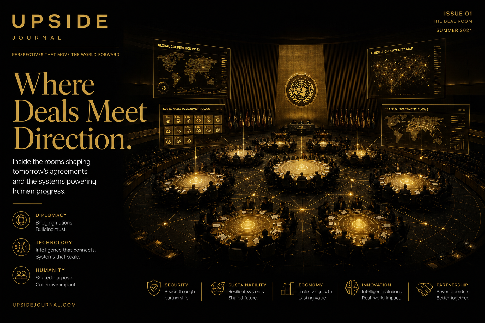

There's a moment at every UN summit when the official programme ends and the real work begins.
The delegates leave the formal session. The side-event rooms empty. And in the lobbies, restaurants, and hotel bars surrounding the venue, a parallel economy activates — one built on introductions, handshakes, and whispered follow-ups between people who travelled 5,000 miles to be in the same room.
This is where Chaste Inegbedion operates. Not as a delegate reading from prepared remarks, but as the systems architect behind a growing infrastructure designed to convert high-stakes international gatherings into measurable deal flow.
From Lagos to the General Assembly Floor
Chaste's trajectory defies the typical founder narrative. Born in Nigeria, educated across borders, and now building across London, New York, and the global conference circuit, his path to founding multiple technology companies was routed through a question most founders never ask: What happens to the relationships formed at the world's most important gatherings?
The answer, he discovered, was almost nothing.
"I kept attending these summits — UNGA side events, World Economic Forum sessions, climate conferences — and watching the same pattern," he says. "Incredible people in the room. World-changing conversations happening in real time. And then everyone flies home, the business cards pile up, and 80% of the potential dies in an email thread that nobody follows up on."
The gap between the conversations happening at international summits and the deals that actually close afterward became the foundational insight for everything he built next.
The Handshake Summit Model
In March 2026, Chaste convened the Handshake Summit during the United Nations Commission on the Status of Women (UNCSW70) in New York. The concept was deceptively simple: instead of another panel discussion about impact, build a structured deal room inside the summit ecosystem.
The Handshake Summit brought together tech leaders — from enterprise SaaS founders to fintech operators to climate-tech entrepreneurs — with institutional partners, development finance organisations, and corporate innovation teams. But the format was different from a typical networking event.
Every meeting was structured. Every conversation was captured. Every follow-up was systematised. The summit ran on Concorde App — the event-native AI platform Chaste built specifically to solve the follow-through problem he'd spent years observing.
The result: attendees reported that structured introductions led to more concrete outcomes in three days than six months of traditional conference networking. Cross-border partnerships between US enterprise buyers and emerging-market founders — the exact transactions that typically die in the follow-up — were initiated with clear next steps, documented intent, and automated workflows to keep them alive.

Building the Infrastructure Layer
Concorde App, backed by Microsoft for Startups, represents Chaste's answer to the systemic problem: a platform that digitises the trust formed in high-stakes, in-person interactions and converts it into structured pipeline intelligence.
The technology captures what no CRM can: the context of a conversation. Not just "I met this person" but "we discussed this opportunity, they expressed this level of intent, and the next step is this action by this date." AI processes voice notes, classifies opportunity levels, scores attendees by relevance and credibility, and automates the follow-through that turns a summit handshake into a signed agreement.
For enterprise and government teams — the ones spending six figures per event to send delegations to Davos, Cannes, and UNGA — this is the missing measurement layer. The platform doesn't replace the relationship. It ensures the relationship survives the flight home.
The Semaform Foundation: Where Social Infrastructure Meets Deal Flow
What makes Chaste's approach distinctive is the integration of social infrastructure with commercial technology.
Through the Semaform Foundation, he's built a parallel track focused on gender equity, inclusive innovation, and cross-border development — the "soft" infrastructure that underpins the "hard" transactions happening on the Concorde platform.
The logic is counterintuitive to most tech founders but obvious to anyone who operates in international development circles: the best deals happen at the intersection of commercial ambition and social mission. The organisations writing the largest cheques in 2026 — sovereign wealth funds, DFIs, ESG-mandated institutional investors — don't just want returns. They want returns that come with a credible impact narrative.
Semaform provides that narrative infrastructure. The Foundation's work at events like UNCSW70 — convening women-led ventures, emerging-market founders, and institutional capital — creates the conditions for transactions that wouldn't happen in a purely commercial context.
"Brands want partners who can make ESG sound like brilliant business strategy, not just charity," Chaste explains. "The companies that understand how to bridge social infrastructure and commercial technology are the ones that will dominate cross-border enterprise relationships for the next decade."
The Pitch Journey: Building the Pipeline
Underneath the summit strategy sits The Pitch Journey — Chaste's founder development platform that prepares emerging-market entrepreneurs to pitch, negotiate, and close with institutional buyers and investors.
The Pitch Journey functions as the top of the funnel for the broader ecosystem. It identifies high-potential founders, sharpens their positioning, and channels them into the structured networking environments — like the Handshake Summit — where the deals happen.
This creates a flywheel: The Pitch Journey feeds qualified founders into Concorde's matchmaking engine, which feeds them into structured deal rooms at international summits, which generates the measurable outcomes that attract more institutional partners, which funds more summits.
What the Model Proves
The significance of what Chaste is building extends beyond any single company or event. It's a proof of concept for a new model of international business development — one that replaces the ad-hoc, relationship-dependent, follow-up-optional approach that has defined global networking for decades with a systematised, AI-powered, measurable infrastructure.
For the thousands of founders, enterprise leaders, and institutional investors who attend major summits every year and return home wondering whether the trip was worth it, the message is clear: the problem was never the event. It was the operating system — and the operating system now exists.